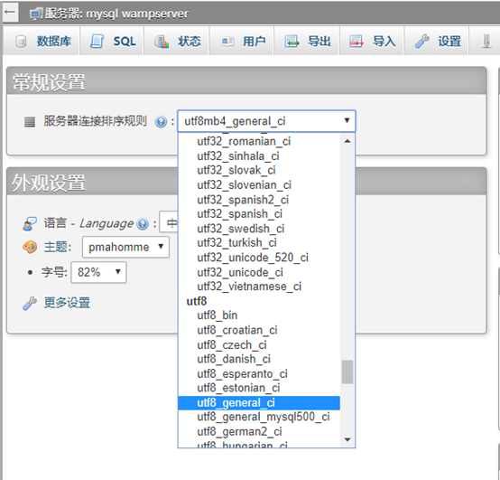

phpstorm是一款php集成开发环境软件，集成了很多功能，不但有强大的代码编辑及调试功能，还能连接数据库。本文写的就是如何用phpstorm来建立访问wampserver数据库，查询输出数据，方便我们开发工作。
1、新建数据库
方法一：点击wampserver的绿色图标，直接选择phpMyAdmin选项，进入wampserver数据库
方法二：点击wampserver的绿色图标，选择Localhost选项，进入wampserver简单页面，然后导航输入(http://localhost/phpmyadmin)，进入wampserver数据库
选择中文编码

点击NEW新建数据库，输入新建的数据库名点击创建
创建数据库成功，点击左侧目录里创建出来的数据库，添加并创建表选择执行
创建自己的表结构并选择保存（A_I的意思是自增序列，一般id都要选择这个）
选择插入数据， 录入相关信息并选择执行
选择浏览来查看我们录入的数据
好，数据库部分我们就完成啦！
2、连接数据库
代码第一行就是连接数据库
PHP代码如下：
<?php
//mysql:host=主机名，port=端口号，dbname=数据库名，root为权限，该句连接数据库
$link=new PDO("mysql:host=localhost;port=3306;dbname=db","root","");
$link->query("set names utf8");//为中文编码集
$arr=$link->query("select * from users");//查询users表中所有数据
while ($row=$arr->fetch()){//每一次读取arr中的一条数据
$json[]=$row;
}
$link=null;//销毁link节省资源
echo json_encode($json);//返回为json格式
3、测试访问数据库
HTML代码如下：
<!DOCTYPE html>
<html lang="en">
<head>
<meta charset="UTF-8">
<title>Title</title>
</head>
<body>
<div>
<table>
<thead>
<th>用户名</th>
<th>密码</th>
<th>昵称</th>
</thead>
<tbody id="tbody">
</tbody>
</table>
</div>
<template id="temp">
<tr>
<td>{{name}}</td>
<td>{{pwd}}</td>
<td>{{nickname}}</td>
</tr>
</template>
</body>
<script src="jquery-2.1.3.js"></script>
<script>
var temp=$('#temp').html();
$.getJSON('connect.php',function (arr) {
arr.forEach(function (el) {
$('#tbody').append(temp.replace("{{name}}",el.name).replace("{{pwd}}",el.pwd)
.replace("{{nickname}}",el.nickname))
})
})
</script>
</html>
运行结果：